so glad you’re here. hope you feel right at home, surrounded by warmth and everything good.
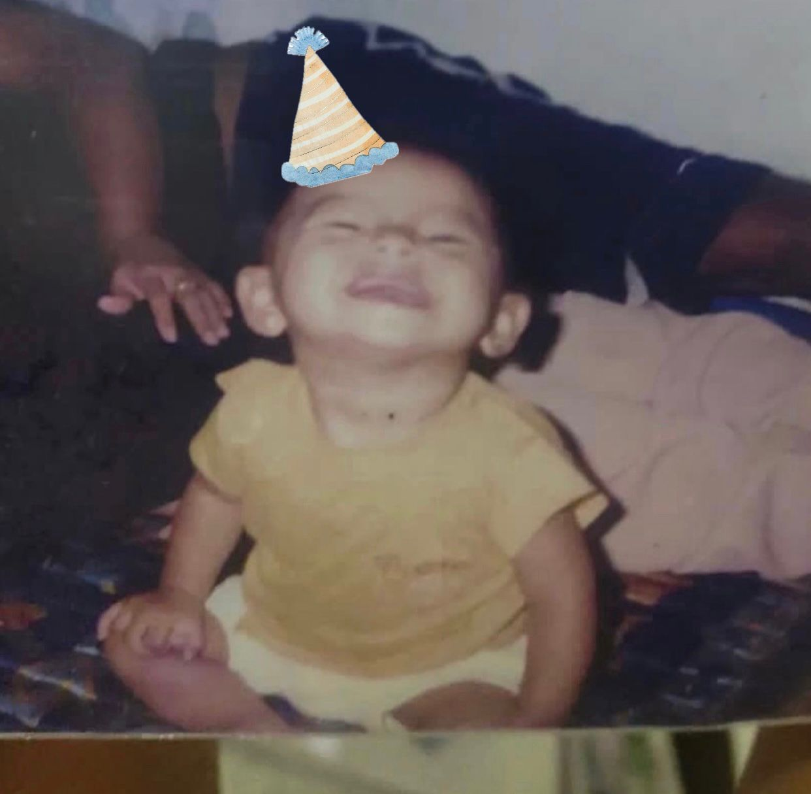
in this little momment ,u didn't know how much u whould grow, how many memmories u whould create, or how many people whould cherish u. yet u were already everything
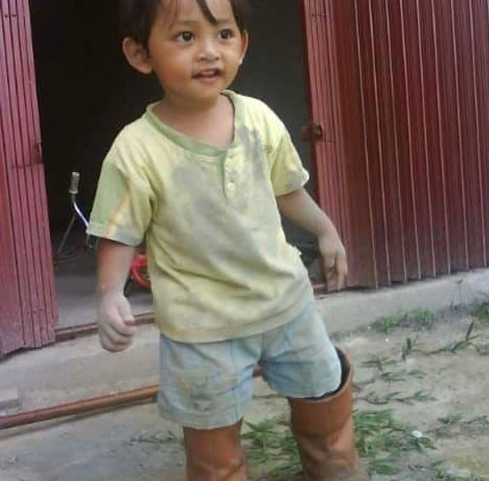
(click the picture)
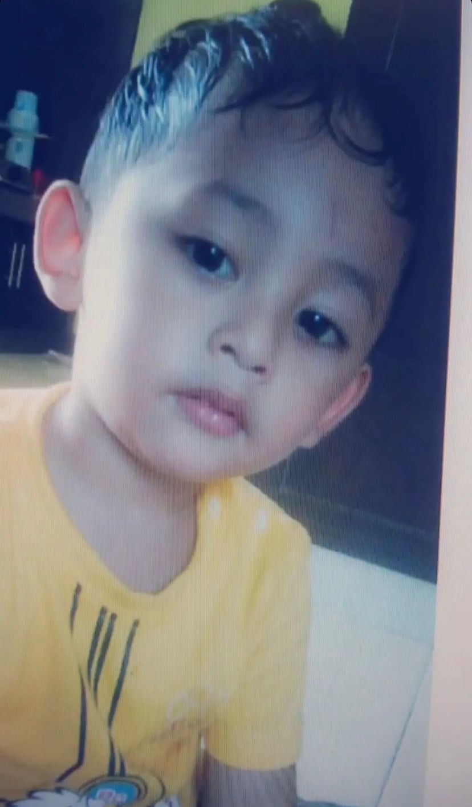
n this quiet moment, there was no rush, no noise, no weight of the world just a small soul, gently existing. Unaware of how quickly time would move, or how many things life would one day ask of you.
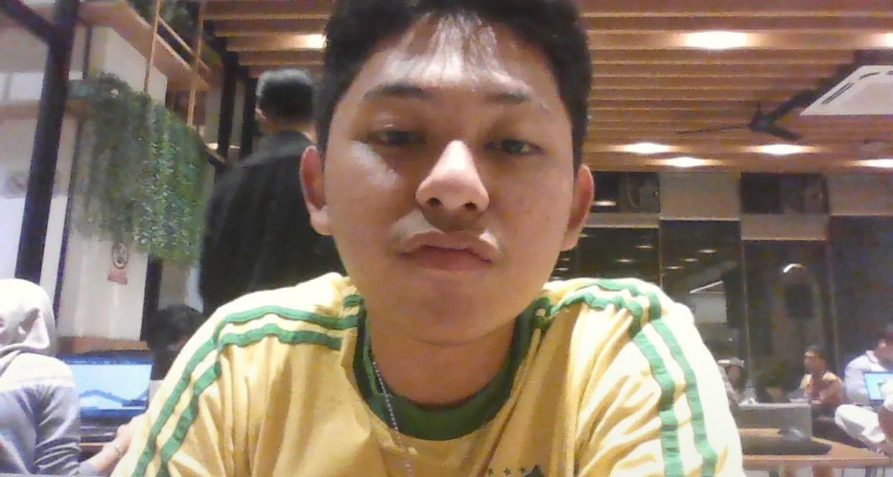
Time did not move gently. It changed things, rearranged paths, placed weight where there was once only lightness. The world grew louder, more complex, more demanding n u had no choice but to grow within it. Yet through every shift, every unseen battle, every silent becoming,there remained something quietly constant. Still your heart. Still your soul. Still you. Not the same as before but no less you than u have ever been..
just u , being u
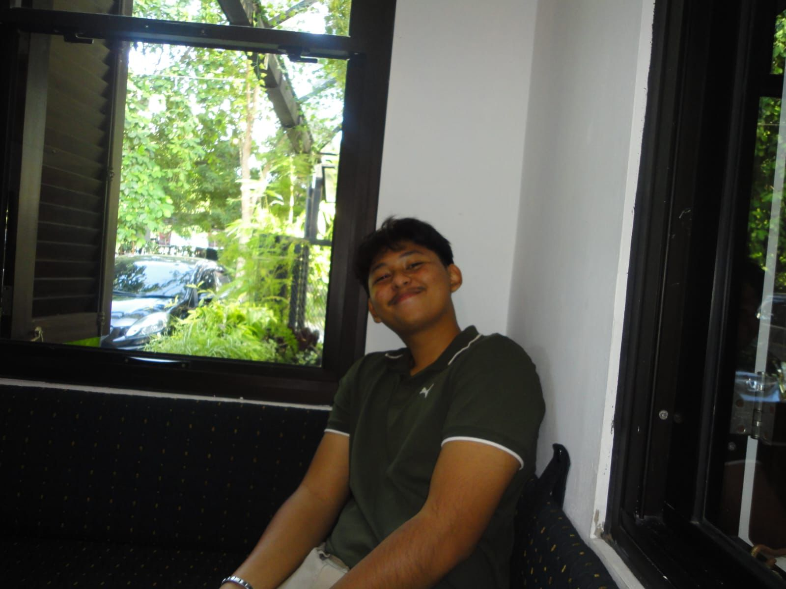
i may not know everyting you've been through,but i hope every small wound u ever cerried slowy finds its healing.i hope u grow without losing the boy u once were.and tht today , u feel more loved than ever before.
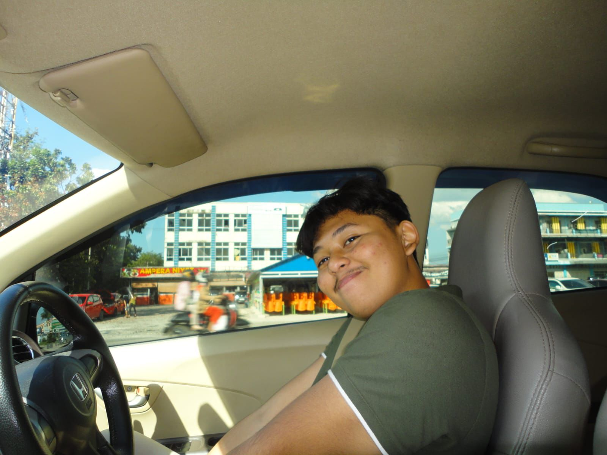
sometimes u look so strong, like u know exactly where ur going.but i know there are battles u've fought silently that not everyone sees. i hope u remember u don't alwys have to figure everything out alone ,wherever life takes u, maythe roads ahead be kinder to u.u deserve peace,not survival
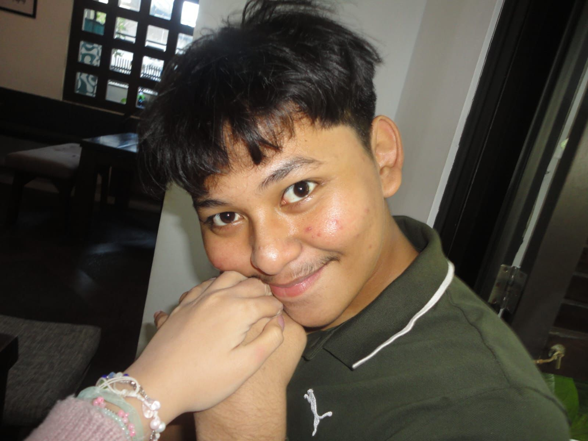
i hope u stop doubting urself one day,the world my be loud ,but i hope ur heart stays steady n sure of who u are
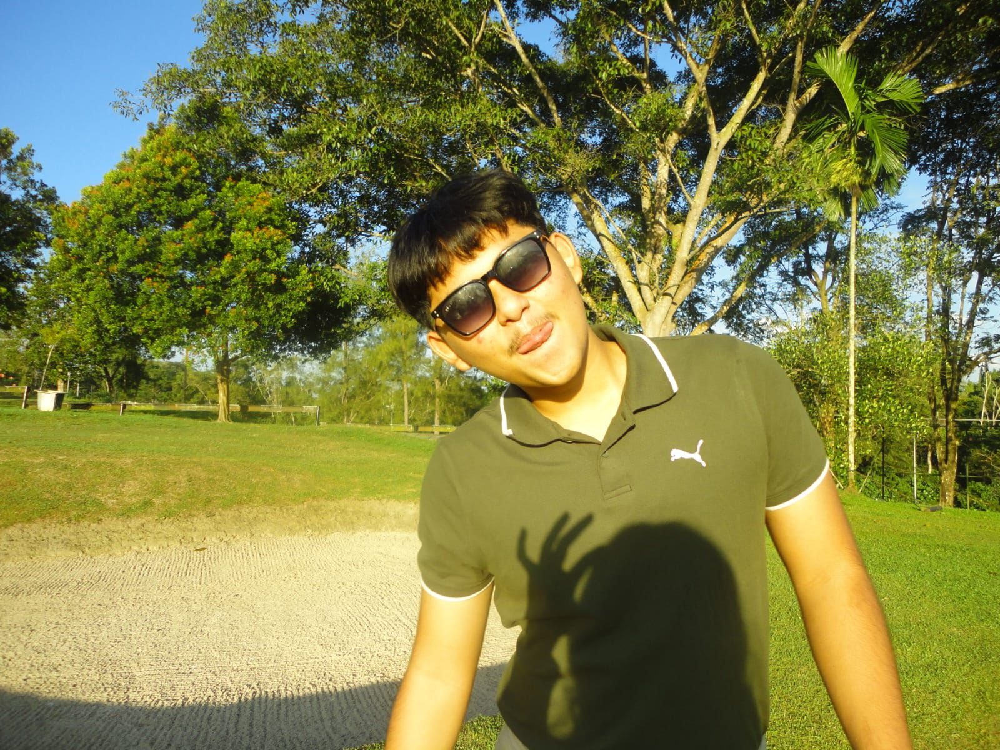
u often carry the weight of others emotions like they are urs.u feel responsible for their happiness,for their peace , n sometimes it leaves u draoned n unseen. it's okkay to admit that it's heavy, it's okay to put urself first
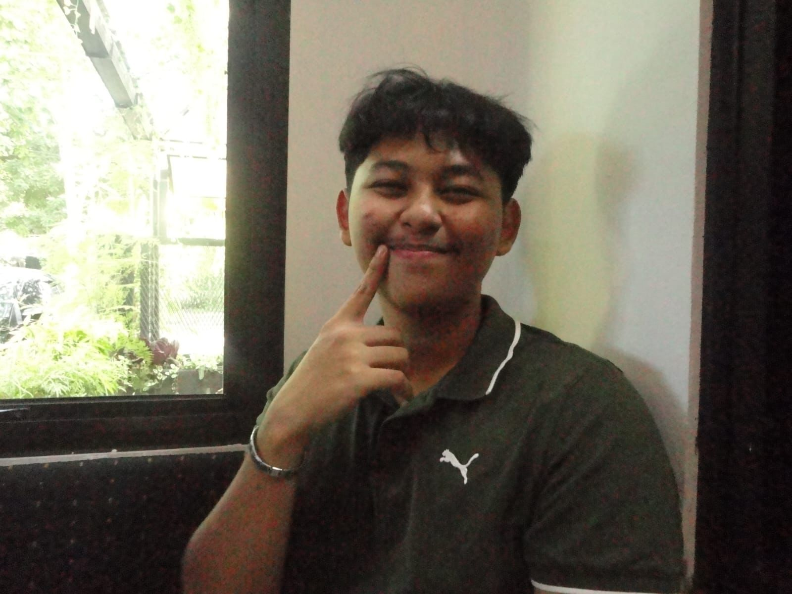
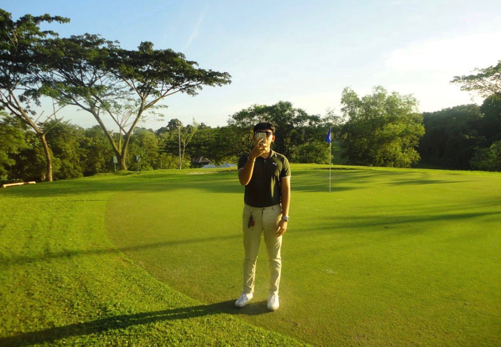
in space where ur feelings matteras much as mine, ur presence would feel even more valued
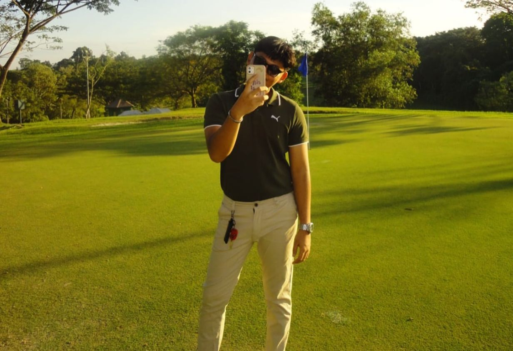
u bring something unique just by being u. the world is lucky to have u
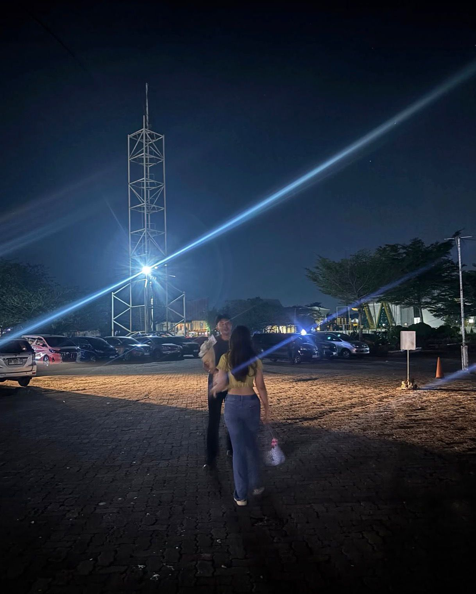
i didn’t know that night would stay with me the way it does. I remember walking toward u, trying to look calm even though I was nervous. The light above us was bright, and everything felt strangely clear like this moment mattered more than we were saying out loud. I u smiled, a little shy, and we both laughed more than we needed to. Not because everything was that funny, but because we were trying to ease the tension. We laughed like nothing would ever change. Like we had no reason to think this wouldn’t last. When our eyes met, it wasn’t dramatic. It was simple. Comfortable. Real. We didn’t talk about the future. We didn’t make promises. But it felt understood that there would be more days like that. At the time, I wasn’t thinking about how things could end. I was just there, happy to finally be standing next to u
Hello again, Kafka Raysa. It’s Ceya. this is the longest page I’ve written, and the heaviest one. because for the first time, I truly realize that loving someone doesn’t always mean you have to stay. I still remember march 24, the first day we started talking. back then, everything felt light. we were curious about each other, slowly opening up, and without realizing it, we became used to one another. from small conversations to deeper stories, everything just grew naturally. I remember how we laughed, how you tried to be the best version of yourself, how I felt cared for in ways that were simple but meaningful. there were many moments when I thought, “maybe this is the one.” and that wasn’t a small feeling for me. but time passed, and I learned something. feelings can grow very deep, but they don’t always move in the same direction. i saw u growing. i know you’re finding your own path, learning to be more mature, more focused, getting to know yourself better. and I’m proud of that. Maybe my feelings grew too big. to the point where i realized that holding on to something uncertain would only hurt me. and I don’t want something that was once beautiful to turn into something I regret. So this time, i’m choosing to let go consciously. not because you weren’t enough. not because we didn’t mean anything. but because sometimes two people can care about each other and still not be meant to walk side by side. happy 19th birthday, kafka. i truly hope your life is filled with ease, sincere love, good fortune, and people who support you wholeheartedly. I hope you continue to grow into the man you want to become. I know you can. And one thing that may never change i will definitely miss you. don’t be afraid that one day you’ll feel the longing alone, because I will miss you too. maybe not through words, not through messages, but through long silence and a heart that still remembers. but this time, I also pray to god… if we are not meant to be together, please don’t let our paths cross again. and if one day we are in the same place, I hope God doesn’t allow me to see you. doesn’t allow us to pass by each other. not because I hate you. not because I want to erase you. but because I know that if I see you even once, I might become the version of myself that struggles to truly let go. so let my longing be something only I carry. and let distance be the way God protects us from hurting each other again.
thank u for making it this far for all the laughter, lessons, and the little moments that truly mattered. this chapter may be ending, but ur journey is still long and many good things are waiting for u. i hope ur steps ahead feel lighter, ur heart more at peace, and ur days filled with simple things that bring you joy and my prayer is that I will always hold you close, even when my arms cannot.